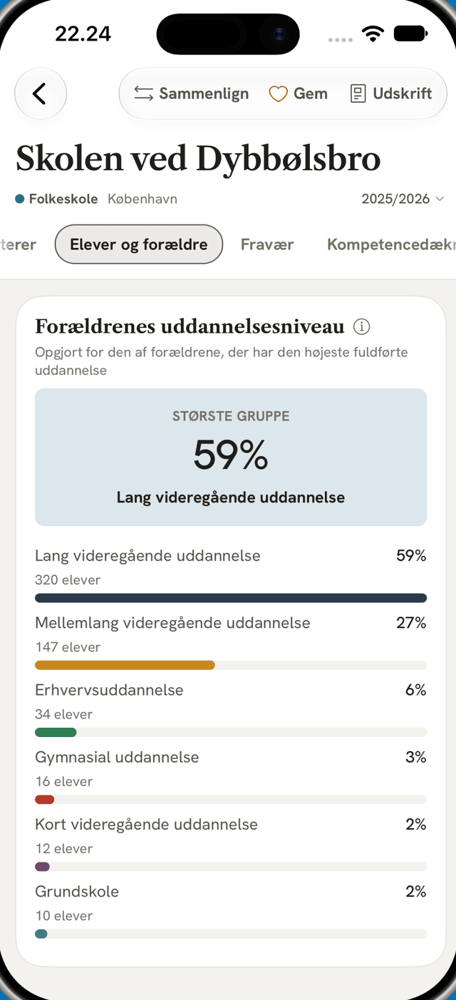

Alle landets grundskoler, side om side.
Karakterer, trivsel, fravær og elevtal – ministeriets tal, skoleår for skoleår.
Til forældre, der skal vælge skole
Skolefinder samler ministeriets tal for over 1.900 grundskoler og viser dem side om side, så du selv kan sammenligne skolerne i din kommune. Ingen samlet score – du drager konklusionen.
Det kan du se for hver skole
- Karakterer
- Trivsel
- Fravær
- Elever og forældre
- Ansatte
- Kompetencedækning
- Ansøgninger
- Kort og liste over skolerne i din kommune. Sammenlign op til ti side om side, og gem dine favoritter.
- Alle tal er fra Uddannelsesstatistik.dk og står med deres skoleår og definition. Et tomt felt er et tal, der ikke er offentliggjort – aldrig et gæt.
- Gratis, uden konto, reklamer og sporing. Skolefinder Plus er et engangskøb, der låser udskriften som PDF op. Privatlivspolitik og support.

In English
Skolefinder is a free iPhone app for parents choosing a school in Denmark: the ministry's figures for every primary school, side by side. No account, no tracking, no overall score.